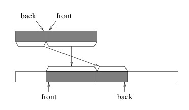

One alternative is to modify the picture somewhat:

We can maintain this picture more efficiently, as there is now no need to move the elements when we dequeue an element - we can just adjust the front of the queue to be the next element. It does mean that we need to keep track of a bit more information, namely, the location of either the front or the back, in addition to the Count (note that we can compute the other end from these two values). But a more serious problem remains. Notice that as we enqueue and dequeue elements, both the front and the back work their way to the right. Eventually, the back element will be the last element in the array. However, this doesn't mean that we are using the entire array, as the front can be anywhere in the array.
To solve this problem, when we need to enqueue an element but the back element is in the last array location, we place the next element at index 0. It is as if we are imagining the array as being circular, as the next location after the last is back at the beginning. The following picture gives two views of such a "circular array" implementation:

Let us now consider how we would implement Enqueue. We first need to determine whether the array is full by comparing the Count with the size of the array. If it is full, we need to construct a new array of twice the size, as we did for both the StringBuilder implementation and the stack implementation. However, we can't simply copy the entire array to the beginning of the new array, as we did for these other two implementations. To do so would leave a gap in the middle of the queue, as shown in the following illustration:

While there are several ways of copying the elements correctly, it may be helpful to copy in such a way that the index of the front of the queue remains unchanged; i.e., we copy as follows:
In order to copy the elements like this, we can use the static method, Array.Copy. This method takes the following parameters:

Now let's see if we can figure out the parameters for the other call. The first element we want to copy is at index 0. We want to place it immediately following the elements we have already copied. Because the last of these elements occupies the last index of the original array, whose size is currently the same as the Count, the next index is just the Count. The number of elements we want to copy, as we have already argued, is the index of the front of the queue.
Once we have the elements copied to the new array, the hardest part is done. After we do this, we just need to copy the reference to the new array into the array field.Once we have ensured that there is room in the array to add a new element, we can complete the Enqueue method. We need to place the element at the back of the queue. We can obtain the proper location by adding the Count to the index of the front of the queue, provided this value is not beyond the end of the array. If it is beyond the end, then we have the following scenario:

Once we have placed the new element at its proper location, we can then increment the number of elements, and we are (finally) done.
The Peek method is straightforward - after verifying that the queue is nonempty, we simply return the element at the front. The Dequeue method isn't much more difficult. We can obtain the element we want to return using the Peek method. We then need to place the default element of type T at the front, and update both the index of the front of the queue and the Count before returning the element we obtained earlier from Peek. The only slightly tricky part is making sure that when we update the index of the front of the queue, we don't go outside of the array. If we do, we need to wrap it back around to 0.Last modified: Tue Jun 19 03:35:42 CDT 2018
© Copyright 2014, 2016, 2018, Rod Howell. All rights reserved.|
|
|
|